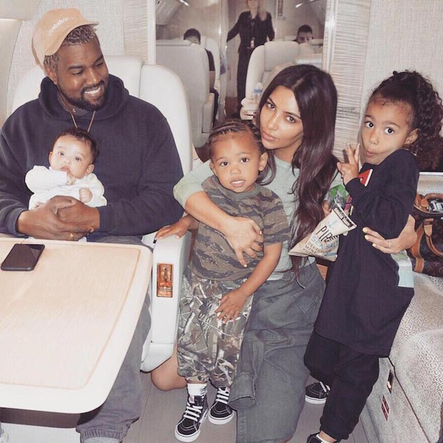

There’s a new little one heading West!
Kanye and Kim Kardashian West are expecting their fourth child via surrogate, PEOPLE has confirmed.
The baby on the way will join big siblings Chicago, 1 this month, Saint, 3, and North, 5½.
Although Kardashian West has made it clear that she loves being a mother, in August, a Keeping Up with the Kardashians source told PEOPLE that the 38-year-old reality star and rapper West, 41, weren’t “in a huge rush” to give their three children another sibling.
“They have absolutely talked about trying for another baby with the help of a surrogate, but nothing seems decided for sure,” said the insider, adding of the couple’s then-7-month-old daughter, who was the only one of their children to be born via gestational surrogate, “Chicago is still little, and they have time.”
Want all the latest pregnancy and birth announcements, plus celebrity mom blogs? Click here to get those and more in the PEOPLE Parents newsletter.
Kim Kardashian West/Twitter
Kanye and Kim Kardashian West with daughter Chicago
Kanye West and son Saint
RELATED GALLERY: Kim Kardashian Reveals If She and Kanye West Are Planning for Baby No. 4
“They don’t seem to be in a huge rush,” the source further revealed. “They would use the same surrogate if she agrees to help them again. Kim can’t say enough kind words about the surrogate.”
A second insider told PEOPLE, “Kim and Kanye were already talking about baby No. 4 when Chicago was just a couple of days old. And they absolutely would use the surrogate again. They love her.”
Kim Kardashian West and daughter North
Kardashian West herself has expressed similar thoughts. As she said in an August interview with E! News after being asked if she and her husband were planning for a fourth child, “I don’t know. I read something that it was, you know — none of that was true.”
“But I’ve been really open about it and talked about it on our show, so I don’t know,” the KKW Beauty guru also told the outlet. “We start filming season 16 next week, so if I think about it more and it’s gonna happen, you’ll definitely see it on the show. But as of now, no.”
RELATED VIDEO: Kim Kardashian West Is Considering Asking Surrogate to Carry Another Baby
In October, Kardashian West revealed that daughter North is a little apprehensive about her existing siblings, admitting that her oldest “acts like an only child at all times” and is “a little confused” about her family dynamic.
“She’s beyond jealousy now. She’s just like, ‘It’s my world,’ ” the reality star said on Ashley Graham‘s podcast Pretty Big Deal. “She said to me the other day, ‘Mom … we just need to have another baby brother so that Saint can just leave me alone … so the girls can be on this side of the house and the boys can be on that side of the house.’ “
North and Chicago West

Saint and Chicago West
RELATED GALLERY: 33 Famous Families Who’ve Welcomed Children Through Surrogacy
Though Kardashian West has been candid about her fears surrounding surrogacy and how she thinks it “is so much harder” than pregnancy, she opened up in May about how it ultimately was an overwhelmingly positive experience.
“I would have maybe one more [child],” she admitted. “I really, really enjoyed the surrogacy process. I will say, when it came to the breastfeeding time, I was like, ‘Okay, this is the best decision I ever made.’ “
“It’s a game changer, having to not go through [nursing] every few hours,” explained the soon-to-be mother of four. “I can spend so much more time with the older kids and getting them used to the baby.”